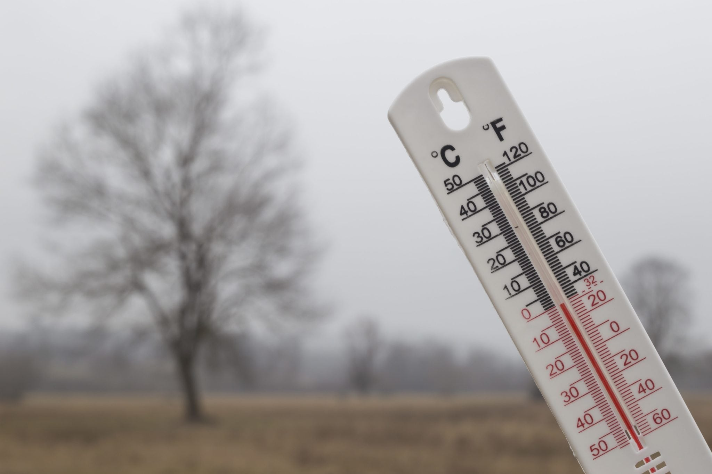

Temperature Variations
Understanding temperature variations is crucial for successful crop rotation. Different crops have varying temperature requirements for optimal growth. It's essential to select crops that can thrive in the specific temperature ranges of your region. Here's a graph illustrating the average temperature ranges throughout the year:
Adaptability of Crops
Crop rotation involves selecting crops that can adapt to different temperature conditions. Some crops are more tolerant of heat, while others prefer cooler temperatures. Here's an image showcasing a selection of crops suitable for different temperature ranges:
Benefits of Temperature-Based Crop Rotation
Maximizes crop productivity by aligning crops with temperature preferences
Minimizes crop stress and potential damage from extreme temperature conditions
Optimizes resource utilization by selecting temperature-appropriate crops
Enhances overall yield and quality of crops

Temperature Effects on Crop Rotation
Temperature plays a crucial role in determining the success of crop rotation. Different crops have varying temperature requirements, and understanding these requirements is essential for optimizing crop rotation strategies.
Effects of Temperature on Crop Selection
Temperature affects the growth, development, and yield of crops. Some crops thrive in cooler temperatures, while others prefer warmer conditions. When planning crop rotation, it's important to consider the following:
Cool-Season Crops: These crops, such as broccoli, cabbage, and spinach, prefer cooler temperatures ranging from 50°F to 70°F (10°C to 21°C).
Warm-Season Crops: Crops like tomatoes, corn, and peppers thrive in warmer temperatures, typically between 70°F and 95°F (21°C and 35°C).
Frost-Sensitive Crops: Some crops, like beans and cucumbers, are sensitive to frost and require a frost-free growing season.
Planning Crop Rotation
Considering temperature requirements is crucial for planning an effective crop rotation:
Rotating Between Cool-Season and Warm-Season Crops: Alternating between cool-season and warm-season crops helps maximize the use of available resources and prevents the buildup of pests and diseases specific to a particular crop.
Accounting for Temperature Extremes: If your region experiences extreme temperatures, select crops that are more tolerant to these conditions.
Considering Microclimates: Different areas within your growing space may have slightly different temperature conditions. Utilize microclimates to your advantage by selecting appropriate crops for each area.
Conclusion
Temperature is a crucial factor in determining the success of crop rotation. By understanding the temperature requirements of different crops and incorporating this knowledge into your planning, you can optimize your crop rotation strategy and increase overall productivity.